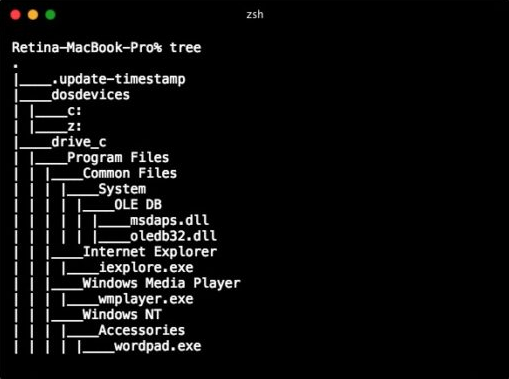
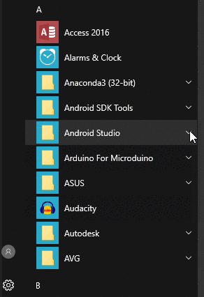
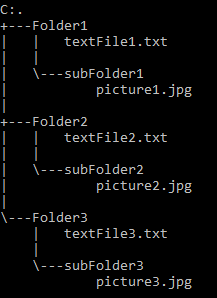
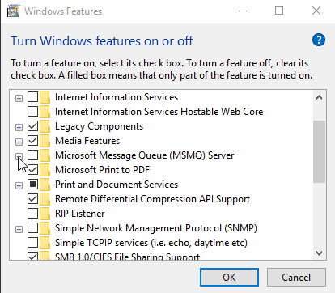
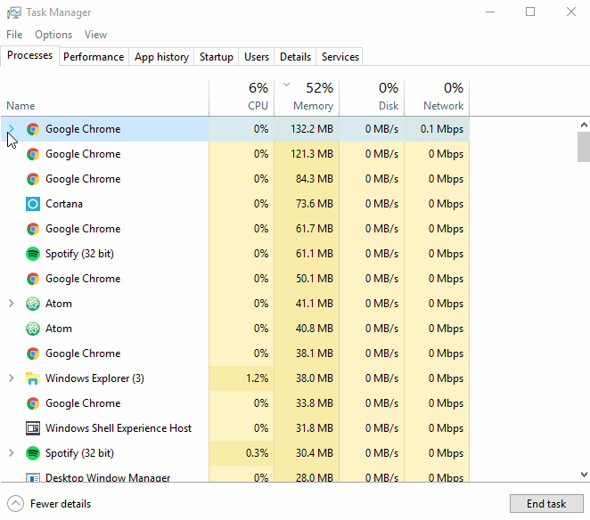
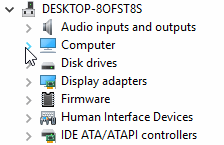

The tree component allows the user to expand or collapse the presentation of data in a hierarchical fashion.
In its idle state, the tree component displays a hierarchy of data typically in two fashions: an outline view or a column view. In an outline view, items that can possibly be expanded or collapsed will be denoted with a specified icon. For example, disclosed arrows, pluses and minuses, "x"s and "o"s, etc. These sets of data are expanded and collapsed in a vertical fashion. On the contrary, a column view asserts expansion and collapsing of data in a horizontal fashion. With a column view, expandable and collapsibleitems may or may not have an icon denoting further options. If existent, the icon is typically positioned on the right.
In its dynamic state, the tree component will generally display more options upon expansion or less options upon collapsing. In an outline view, when an expanded or collapsed item is clicked, its icon changes responsively. If it is expanded, further data will be displayed and its icon will change into a "expanded" state. If it is collapsed, less data will be displayed and its icon will change into a "collapsed" state. In a column view, when an item is clicked, the expanded data will simply display to the right of the selected data.
The most relevant event to the tree component is theclick. for a user to experience the tree aspect, they must initiate the functionality with a singleclick. This can be circumvented in a column viewed tree by simply using thearrow keysto navigate through the data.
Nested menu items are very close to tree components in behavior-they display further options for the user whenclickedorhoveredover. Nested menu items are categorized as a subset of a menu are applicable in differing situations from tree components therefore having distinctions.
Dropdown Buttons can be considered to have tree-like properties such that upon being clicked, the button displays ore options for the user, which is like that of expansion. Despite this facet, like menus, dropdown buttons are not effectively capable of organizing items hierarchically in consideration of files or folders on a hard drive for example.
Learnability/Memorability: Tree components are widely used across various operating systems and interface designs today. Argumentatively, the tree component provides the most efficient way of navigating through folders and files to find the intended destination. Tree components effectively bridge the gap between the user's mental model and the designer's mental model such that they are very much user-friendly, and act in the way a hierarchy is perceived. Therefore, first-time users should have minimal problems learning to navigate through a tree component. The high priority of learnability also implies the high priority of memorability.
Efficiency/Errors: As aforementioned, the tree component allows a user to navigate through a plethora of files and folders with utmost efficiency. An alternative view to tree is an icon view. Here, each item must be doubled-clicked to be prompted with the contents within those items. The tree component makes use of a single click to expand and display all contents of that item. Alternatively, the tree component makes use of arrow keys to effortlessly navigate through a directory. The only room for errors here is a misclick in the designated icon that would expand or collapse the item or arrowing into an unintended directory.
Satisfaction: If any metric at all can be considered as a “low priority” for tree components, it would be satisfaction. Generally, all tree components will be designed comparably except for color choices, icons, fonts, etc. The efficiency and easiness of the design of a tree component is of foremost importance. Attempting to make a tree component "fun" seems counter to its purpose.
According to Apple, different guidelines are appropriate for different views. In the outline view, where hierarchical data is expanded vertically, items presented upon expansion should be indented. Further, the column width is to be resized so that it is just wide enough to display the widest item when a user expands or collapses items.
In terms of the column view, Apple says that this component view should be used when the data can only be sorted in one way, or if a user desires the information to be sorted in one way. Further, Apple provides 2 general rules to follow in a column view tree component:
Tree components in various design interfaces have feedback mechanisms implemented for the user to determine whether the intended action has been performed and specifically whether the data sought is existent. This is achieved in different ways for different tree designs.
In terms of outline-view trees:
clicked, the item should expand. If no items are presented, there is no further data.clicked (i.e. expanded and collapsed)In terms of column-view trees:
selection of that itemMac OS X: Yosemite
As previously stated, generally tree components across platforms will maintain very similar qualities. The distinctions will primarily lie within subtle design differences and the feedback given. For OS X Yosemite, in an outline view tree, each item has a disclosure triangle facing to the right, which is located immediately to the left of the item. Upon clicking that triangle, the direction of triangle changes to point downward. Further, upon expansion, the subitems are indented.
One other way that Mac OS X integrates the tree component is through the Terminal with the proper steps, which can be found in Using A Mac Equivalent of Unix "tree" Command to View Folder at Terminal denoted in the OSX Daily link also provided in the "References" section.
Windows 10
Guidelines
Below are some of the most important guidelines for Windows 10 trees which can be found here.
Presentation
- Within a container, sort the items in a logical order.
- Avoid presenting empty trees.
- Don't make the container nodes collapsible if users have no reason to collapse them.
- If users expand or collapse a container, make that state persist so it takes effect the next time the tree view is displayed, unless users are likely to prefer starting in the default state.
- Reconsider connecting lines when not necessary to avoid clutter.
Interaction
- Consider providing double-click behavior.
- Make double-click behavior redundant.
- Provide context menus of relevant commands.
Tree Organization
- Use a natural hierarchical structure that's familiar to most users.
- Prefer breadth over depth.
- If the tree has alternative access methods such as a word search or an index, optimize the tree for browsing by focusing on the most useful content.
Check Box Tree Views
- Display the number of selected items below the list.
- Use mixed-state check boxes to indicate partial selection of the items in a container.
Start Menu
The start menu is a staple of Windows platforms. The Windows 10 start menu has a tree search feature. If folders are listed in the start menu and they have an exe file or html page in them, you can click on the upside-down carrot to show the file/s. The start menu has an alternate access method which is typing the name of the thing you are searching for. Windows 10 decided to not show the search bar right away, instead only showing it when you start typing. The windows tree view guidelines state that if an alternate search method is available (like the search bar in the start menu), then the tree must be optimized to focus on the most useful content. It also says that to simplify the tree so that it is easier for the user to find the most useful content.

Command Prompt
In the windows command prompt you can make a tree view of your current directory. It looks almost identical to the Mac OS X: Yosemite command prompt tree view except that the files within folders do not have lines going to them. These lines are omitted because of a Windows guideline that tells you to reconsider connecting lines. This guideline says that even though lines connecting to every element of a tree can clearly show the relationships between nodes and their children, they add too much clutter for the extra comprehension to be worth it.

Check Boxes
The check box tree view is a tree that is used in selecting items. It combines the check box component with the tree layout. The drop-down buttons are square in this case instead of the normal "v" shape to better match the look of the square check boxes.

Examples of Windows 10 Trees
Task Manager

Device Manager
